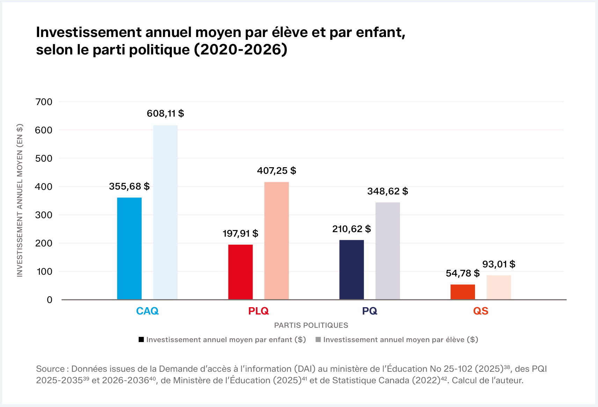

Une enquête de Gabriel Nadeau-Dubois
LE BON PARTI,
LES BELLES ÉCOLES ?
LA RÉPARTITION DES INVESTISSEMENTS EN INFRASTRUCTURES SCOLAIRES SOUS LE GOUVERNEMENT DE LA CAQ
Depuis des années, la rumeur court: les circonscriptions représentées par des députés du parti au pouvoir sont-elles avantagées en matière de rénovation et de construction d’écoles? Pour aller au-delà des ouïes dires, Gabriel Nadeau-Dubois a voulu tester l’hypothèse.
Après 76 demandes d’accès à l’information, la compilation de plusieurs sources de données publiques et l’examen de tous les projets d’infrastructures scolaires inscrits au PQI entre 2018 et 2026, le rapport tente de répondre à la question suivante : depuis l’élection de la CAQ, les circonscriptions représentées par celle-ci ont-elles reçu davantage d’investissements, toutes proportions gardées?
Pourquoi ce rapport est important
Une question d’équité dans les écoles publiques
Tous les enfants ont droit d’apprendre dans un environnement sain et sécuritaire. L’enquête de Gabriel Nadeau-Dubois démontre que les circonscriptions représentées par la CAQ, ont reçu, en proportion, davantage de projets et d’investissements en rénovation et en construction d'écoles que les autres circonscriptions. Des sérieuses questions se posent quant aux critères utilisés par le gouvernement pour l’attribution des projets.

Ce que révèlent les données
Des investissements concentrés et difficiles à justifier
Alors que la CAQ détenait 64% des sièges à l’Assemblée nationale du Québec, ses circonscriptions ont obtenu 72 % des projets et 75 % des investissements totaux. Les circonscriptions de la CAQ sont pourtant celles où les écoles sont, en moyenne, les moins vétustes , les plus jeunes et les plus favorisées du Québec. Autre fait intéressant: 75 % des investissements au PQI en infrastructures scolaires ont été effectués lors des deux premières années du gouvernement caquiste (2019 et 2020), et seulement 5% dans le deuxième mandat. Un rythme d’investissement aussi irrégulier est extrêmement difficile à justifier.
- 64 %
- des sièges à l’Assemblée nationale du Québec étaient détenus par la CAQ.
- 72 %
- des projets ont été obtenus par ses circonscriptions.
- 75 %
- des investissements totaux sont allés aux circonscriptions de la CAQ.

« Tout le monde a déjà entendu dire que les gouvernements favorisent leurs propres comtés quand vient le temps d’investir en infrastructures et c’est un sentiment partagé dans le milieu de l’éducation. Notre travail révèle que cette hypothèse est de plus en plus difficile à écarter. Depuis 2018, les comtés caquistes ont bel et bien reçu plus que leur part du gâteau des investissements scolaires du PQI. Le processus d’attribution des investissements est opaque, il y a un sérieux problème de transparence et d’équité. Avoir de belles écoles de quartier ne devrait pas dépendre de la couleur du député local. L’argent devrait aller là où les besoins sont les plus grands, point final. »
- Gabriel Nadeau-Dubois
Le bon parti, les belles écoles ?